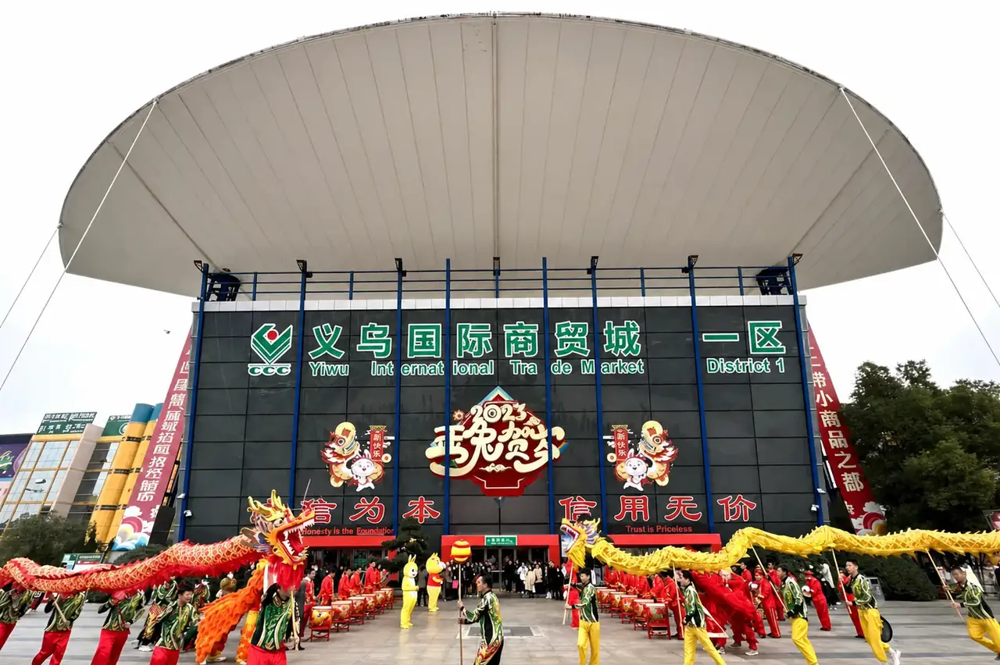

The short answer
Yiwu International Trade City and Guangzhou Eastern Yiwu Market are separate market projects with different locations, scale and sourcing roles. Yiwu is a large, multi-district small-commodity marketplace with established category concentration and trade-service infrastructure. Guangzhou Eastern Yiwu Market presents itself as a regional small-commodity trade platform serving South China and surrounding markets.
For an international buyer, the best choice is driven by category fit, supplier capability, sample requirements, quantity, destination, consolidation plan and the evidence needed before approving an order.
Difference one: market role and sourcing depth
Yiwu International Trade City is organised around multiple market districts and a broad small-commodity ecosystem. The official Chinagoods market guide presents Districts 1–6 and associated market areas, allowing buyers to focus a search by category. Its newer sixth-district Global Digital Trade Center is positioned around trade and digital-service development.
The operator of Guangzhou Eastern Yiwu Market describes a four-floor, regional small-commodity trade platform with an emphasis on serving the Pearl River Delta and South China. This may make it a useful regional touchpoint, but it should not be assumed to have the same category depth, supplier density or operating model as Yiwu's international market complex.
Difference two: how buyers should use the market
In Yiwu, a buyer often begins with a defined category route, then compares suppliers against one specification and turns promising samples into a written order reference. In Guangzhou, a buyer may use the market as one part of a South China search, alongside regional factories, trade-fair contacts and logistics routes. In either city, a walk-through alone is not a procurement method: record supplier identity, product version, material, MOQ, quotation basis, sample terms, carton data and every exception.
Difference three: product and supplier follow-up
Neither market name is a quality guarantee. Whether a supplier is found in Yiwu or Guangzhou, the buyer needs the same controls: a usable brief, comparable quotation sheet, approved sample, agreed product checks, packaging instructions, purchase-order references and a plan for receiving or shipment handoff. A sourcing partner can make these China-side steps visible when they are in the agreed scope.
Future trend: physical discovery linked to digital trade services
The direction is not “offline market versus online platform.” It is a combined workflow: online discovery and communication, then supplier confirmation, samples, order evidence and logistics coordination. Yiwu's official market materials highlight continuing digital-trade and service development; Guangzhou's trade policy also emphasizes cross-border e-commerce and specialized-market upgrading. These are indicators of direction, not a promise that a particular supplier or order will be suitable.
Future trend: regional nodes and multi-city sourcing
Buyers increasingly need a sourcing plan that can combine different China locations without losing control of specification and evidence. A South China visit may produce leads near Guangzhou, while Yiwu may provide a broader small-commodity comparison or mixed-category route. The practical trend is not replacing one city with the other, but using the best supplier route for each SKU and keeping all decisions in one buyer-controlled comparison process.
How ROYAL UNION can support the decision
ROYAL UNION is an independent sourcing and supply-chain partner under MU Group, based in Yiwu. For an agreed B2B project, we can support product and supplier research, comparable quotations, product development and packaging coordination, order management, quality-check coordination, warehouse receiving, multi-supplier consolidation and export preparation.
We are not the operator or official agent of either market. Supplier availability, prices, documents, timing and service scope must be confirmed project by project.
Send your market and product brief
Share product references, quantity, destination, target price basis and timing. We will help identify the practical sourcing route and the questions that should be answered before approval.
Buyer questions
Is Guangzhou Eastern Yiwu Market the same as Yiwu International Trade City?
No. They are different market projects in different cities. Evaluate each one against the product brief, supplier route and required follow-up.
When should an international buyer start with Yiwu?
Yiwu is often useful for broad small-commodity research and mixed-category sourcing, but the right route depends on the specific product and order requirements.
Can a sourcing partner coordinate suppliers across different cities?
Yes, when included in the project scope. The agreed work can include research, quotations, samples, order follow-up, quality checks, receiving, consolidation and export preparation.
Are digital trade tools replacing physical market visits?
They can improve discovery and follow-up, but they do not replace product specifications, supplier verification, samples or written terms.
Source note: market and project descriptions were reviewed on October 5, 2026 against the official Chinagoods market guide and the Guangzhou Eastern Yiwu Market introduction. Trend observations are ROYAL UNION's buyer-focused interpretation and are not forecasts or guarantees. Confirm current tenant mix, market layout, supplier terms and travel arrangements directly before a visit or purchase.